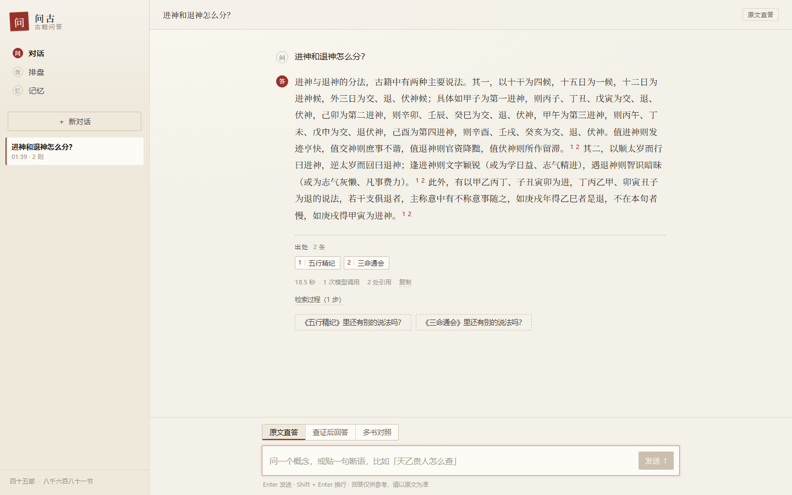
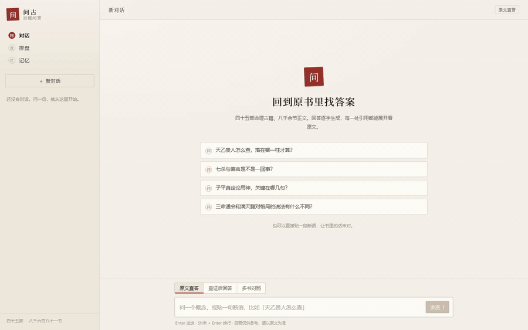
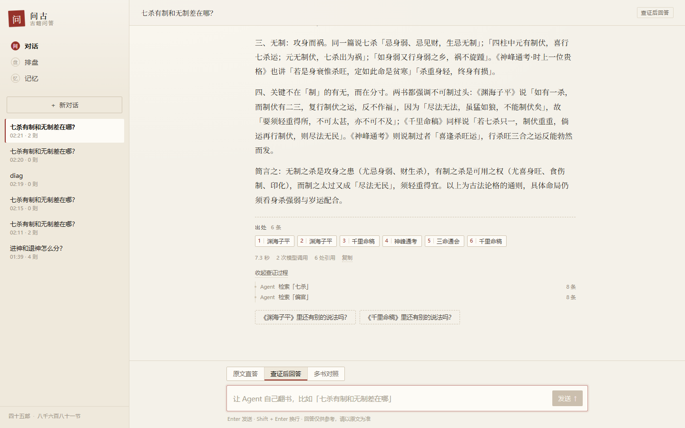
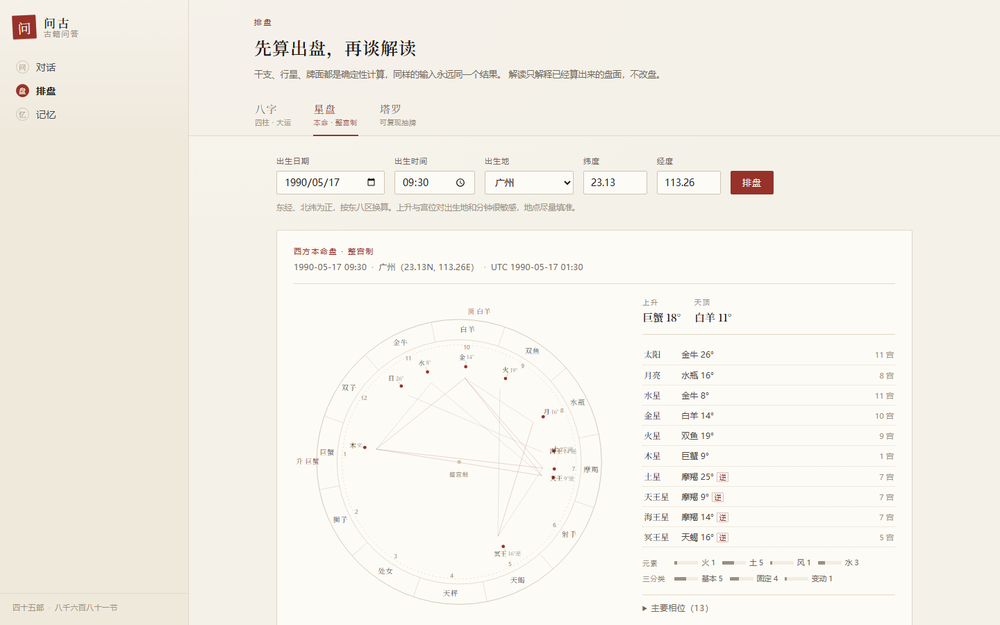

检索增强生成 · 工具调用 · 多轮记忆
问占
古籍问答 Agent
45 部命理古籍，8,681 个检索块，约 340 万字。每一句结论都要指回原文某一段；指不到，就说不知道。
在线实例：CloudStudio ↗（工作区运行期间可用，停止后失效）

- 入索引古籍
- 45部
- 检索块 / 原文
- 8,681块 · 约 340 万字
- 并发验收
- 200条 SSE · 20 个回答
题解
不编原文，是底线
古籍问答最要命的失败，不是答得浅，而是模型用现代常识补出一句听起来很像古籍的话。用户无法分辨，检索也就失去了意义。
所以这个项目的核心不是「答得好」，是「每句结论都能指回原文某一段」。
落到工程里，只有三件事。它们不是提示词里的口号，而是出口处的硬校验：30 条测试中，声称能答却零有效引用的输出为 0 条。
「每句结论都能指回原文某一段；指不到，就说不知道。」
不是预测不是现代生活类比指不到就拒答
只取 Top-5
只允许使用检索到的 5 个片段。提示词明确禁止调用预训练知识，片段之外的内容不进入答案。
强制引用
每条结论标 [编号]。编号越界、引用白名单外，或声称能答却零有效引用，直接判为不合规输出。
无据拒答
片段只是主题相近、却答不了问题时，返回固定拒答语（can_answer=false），不硬答。
10 条语料外问题（考研、考公、买房、整容、彩票……），10/10 全部拒答，没有一条被「算」成命理问题。 2026-11-07 · 30 条人工评测集 · 10 条语料外 + 20 条可答
卷一 · 检索
两路召回，一种答案
BGE-M3 管语义，BM25 管字面。两类错误并不重叠——单跳释义上向量更强，干支术语上 BM25 更强，所以融合才比任何单路都好。
离线
在线
8,681 × 1024 的向量索引约 35 MB，留在进程内做精确检索，不引 pgvector，省一次网络往返，也避免评测口径漂移。
| 策略 | R@5 exact | R@5 line | MRR line |
|---|---|---|---|
| dense（BGE-M3） | 52.5% | 62.5% | 48.7% |
| BM25（字二元组） | 42.5% | 52.5% | 38.7% |
| RRF 融合 | 70.0% | 75.0% | 61.8% |
语料从 2,830 块扩到 8,681 块后，RRF 的 line R@5 一度掉到 70.0%。在 8,681 块上重扫 280 组参数，改成 rrf_k=10 / candidate_k=40 后回到 75.0%，逐题对比只多命中 1 题、没有回退。
为什么不直接上向量库。8,681 条向量做暴力检索只要毫秒级，进程内就能算完。引入向量库会多一次网络往返、多一套索引一致性要维护，而评测集只有 20 道可答题——先把可解释的基线跑稳，再谈基础设施。
为什么不是「混合一定更好」。RRF 只吃排名、不看分数：某一路排第 2 的强命中，可能被「两路都排第 20」的弱相关块挤出 Top-5。这是 v1.1 真实发生的失败，也是后来加深候选池的直接原因。
混合检索的理由不是「两个都比一个强」，而是两类错误不重叠。 单跳释义：dense 88% vs BM25 38% · 应用推理：dense 50% vs BM25 75%（RRF line Recall@5）
卷二 · 对话
每一句，都有出处
回答逐字流出，引用可以展开到原文。多轮追问先改写成不依赖上文的独立问题，历史只用来消解指代，不拿来当证据。

录屏对象是部署后的实例，走真实接口，没有 mock、没有预填回答。等待段按 4 倍速压缩，正文逐字出现的部分接近实时。
看原始录屏（mp4，26 秒）↗- 整条回答18.5秒
- 模型调用1次
- 引用2处，可展开
「进神与退神的分法，古籍中有两种主要说法。」
1 五行精纪2 三命通会
引用不是装饰。点开每一条，看到的是检索命中的原块；引用编号必须落在本轮工具实际返回的 chunk_id 白名单里，越界即判不合规。
多轮场景下，每轮引用只来自本轮检索，历史里出现过的旧结论不能当本轮证据——换书追问时尤其重要。
卷三 · 查证
让它自己翻书
固定单轮检索的瓶颈，是一个全局融合权重只能对题型取平均。v1.2 起改成 ReAct 工具调用：模型自己决定查什么、查哪本书、够不够。
「查证后回答」模式下，Agent 先检索「七杀」8 条，再检索「偏官」8 条，然后才成文。工具轨迹实时显示，结束后可以收起。
- Agent 检索「七杀」8 条
- Agent 检索「偏官」8 条
- 成文 · 2 次模型调用7.3 秒
- 引用6 处
工具协议已从手写 JSON 换到原生 function calling，单/多 Agent 共用 6 步预算。工具实际返回过的 chunk_id 才能进引用；走满预算还没收口，就按「证据不足」拒答。
30 题开发集：单 Agent 23/30，多 Agent 26/30。这是 development set，不是盲测集；26/30 不能外推成「换一批题也有 87%」。

卷四 · 排盘
先算盘，再解读
排盘是确定性的历法 / 天文计算，不经过模型。模型只解释已经算出来的盘面，不重算、不改盘。
- 八字四柱、藏干、十神、纳音、五行计数与大运。按节气定月，按东八区换算时辰。
- 星盘整宫制轮盘，上升 / 天顶、十行星落座与宫位、元素与三分类。经纬度可精确到出生地。
- 塔罗过去 / 现在 / 未来三张，逆位标注；seed 可复现，同一 seed 永远同一副牌。
同样是输入，永远是同一个盘面。模型看到的是算好的结果，它不能改数字，也不能自己「感觉」一个上升星座。
解读是一次单独的模型调用，不流式返回。等待约 9 秒，录屏里压缩到 4 秒——这是录制时唯一的时间轴处理。

卷五 · 并发
200 条连接，20 个回答
连接与回答分开验收：/v1/events 只发心跳，不占回答槽；20 个回答由 Redis 全局槽控制，槽满立即 429，不排队。
SSE 连接保持 10 分钟 · 0 错误
同期 20 并发回答 · 错误率 0.41%
首 token P95
整条回答 P95
| 验收项 | 结果 |
|---|---|
| 200 条 SSE 连接 | 200/200 · 7,800 次心跳 · 建连 P95 322 ms |
| 同期 20 并发回答 | 480/482 成功 · 错误率 0.41% · TTFB P95 1.01 s · 完成 P95 4.30 s |
| 检索 16 并发 | 130.5 QPS · P95 176.7 ms · 0 错误 |
| 30 分钟 soak | RSS 5,096.0 → 5,098.3 MB（+0.05%）· 23,800 次心跳 |
| 21 并发（故意超卖） | 112 × 200 + 6 × 429 · 服务未被拖垮 |
边界：测试机是 8 核 CloudStudio，回答压测带 X-No-Cache: 1 走真实模型；200 连接挂在只发心跳的 /v1/events，不是 200 条并发回答。那 2 条 429 来自本服务的全局闸门，不是模型报错；DeepSeek 上游曾出现瞬时限流，间隔后复测 0 错误。这不是 SLA，是一组可复现的验收数字。
卷末 · 局限
没做到的，也写下来
评测集是 development set，不是盲测集。下面这些结论都有边界；把它们一起放出来，比只挑好看的数字更接近真实。
-
01
30 条、单人标注
1 道题就是 5 个百分点；跨书对比只有 3 道、多跳只有 1 道。26/30 只能读作「在这套题上迭代后的结果」，不能外推成换一批题也有 87%。
-
02
评测只覆盖前 16 部标点古籍
索引已收 45 部（16 部标点 + 29 部无标点），但 29 部无标点组还没有对应题目，真实覆盖率尚未测量。75.0% 只代表「问的书在库里」时的检索质量。
-
03
只校验引用编号，不校验忠实度
出口能拦住「零引用」「编号越界」，但拦不住「这段原文并不支持这句话」。4/19 题回答没有引用到标注块；RAGAS faithfulness 与人工抽检还没做。
-
04
口语改写是最弱题型
line Recall@5 只有 50%：「栋梁 / 花草」这类转述在古籍原文里没有字面对应，查询侧还没做术语映射。这不是模型大小的问题。
-
05
多 Agent 不是免费的
30 题上 26/30 优于单 Agent 的 23/30，但 P50 60.2 秒、每题 7.6 次调用；多轮场景反而 18/20，低于单 Agent 的 19/20。加角色没有带来额外收益。
附录
工程与入口
FastAPI · SSE 逐 token · Redis 全局 20 槽 · Postgres 业务库 · BGE-M3 向量 · BM25 倒排 · DeepSeek function calling · React 前端 · Docker Compose · pytest（206 passed / 2 skipped）